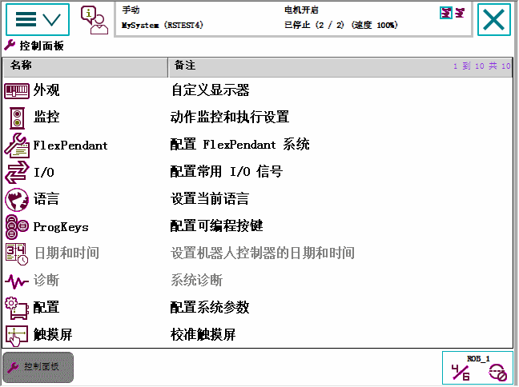

控制面板包含自定义机器人系统和 FlexPendant 的功能。

Appearance（外观） | 自定义屏幕亮度的设置。请参阅 更改亮度和对比度。 | ||
Supervision（监控） | 动作监控设置和执行设置。请参见使用动作监控和无动作执行。
| ||
I/O | 配置常用 I/O 列表的设置。请参见配置常用 I/O。 | ||
Language（语言） | 机器人控制器当前语言的设置。请参见改变语言。 | ||
ProgKeys（预设按键） | FlexPendant 四个可编程按键的设置。请参见更改预设按键。 | ||
控制器设置 | 网络配置设置、机器人控制器的日期和时间及控制器的标识号，参见控制器设置。 | ||
Touch Screen（触摸屏） | 触摸屏重新校准设置。请参见校准触摸屏。 | ||
FlexPendant | 操作模式切换和用户授权系统 (UAS) 视图配置。请参见定义操作模式更改或启动时显示的视图。 | ||
Configuration（配置） | 系统参数配置的配置 |